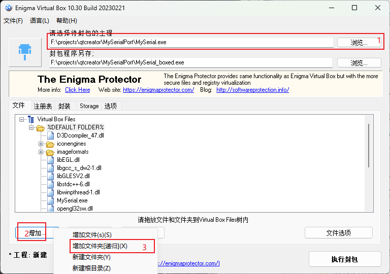

QTcreator上位机
让字体适应高分辨率，在
main函数开始加以下语句：1
QCoreApplication::setAttribute(Qt::AA_EnableHighDpiScaling);
检查QByteArray每个字节的bit
1
2
3
4
5
6
7
8
9
10
11
12
13QByteArray byteData;
const char *pData = byteData.constData();
for (int i = 0; i < byteData.size(); ++i) {
for (int j = 7; j >= 0; --j) {
if (pData[i] & (1 << j)) {
std::cout << "1";
} else {
std::cout << "0";
}
}
std::cout << std::endl;
}
std::cout << "--------------------" << std::endl;QByteArray通过SerialPort.wirte()发送时，是从下标为0的字节开始发送，每个字节内是从低位开始发送
更换图标，将.ico放到工程文件夹内，在.pro中添加
1
RC_ICONS = xxxxxx.ico
打包可执行文件：
构建切换到Release模式，点击运行
在build-xxxxx-Release文件夹中的release文件夹中找到xxx.exe，复制到新创建的一个文件夹（如MyEXE）中，
开始菜单搜索qt，打开命令窗口，用" cd /d 路径 "切换到MyEXE下，例如
1
cd /d F:\projects\qtcreator\MyEXE
再输入：windeployqt xxx.exe
1
windeployqt xxx.exe
打包完成，已经可以正常使用了。接下来借用其他软件将所有文件打包到一个exe文件
打开Enigma Virtual Box，选择刚才打包好的exe文件，点击增加，增加刚才新创建的文件夹（如MyEXE），点击“文件选项”，勾选压缩文件，确定，执行封包，等待，最后就可以得到只有一个可以运行的exe文件

评论